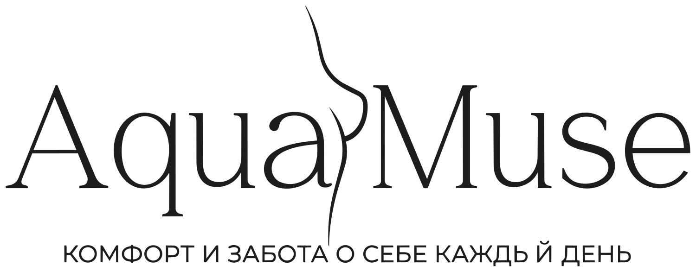

Посадка
Пояс должен держать основную поддержку, чашка - заполняться без пустоты и заломов, а перемычка спокойно прилегать.

ЗаписатьсяОтбор белья
В Aquamuse важен не логотип, а то, как конкретная модель работает с вашей грудью, плечами, объемом и привычной одеждой. Поэтому мы смотрим на посадку, размерную сетку и поведение белья в реальной носке.
Пояс должен держать основную поддержку, чашка - заполняться без пустоты и заломов, а перемычка спокойно прилегать.
Нам важны модели, в которых можно подобрать соседние размеры и проверить посадку, а не угадывать по одной бирке.
Пояс не должен быстро растягиваться, задираться на спине или переносить всю нагрузку на бретели.
Мы смотрим, как чашка работает с разной формой груди: собирает, не режет край и не создает лишнего объема.
Ткани и кружево должны быть приятными к телу, без грубого края и лишнего давления в течение дня.
Проверяем, как белье выглядит под футболкой, рубашкой, платьем или плотной тканью: без случайных заломов и резких линий.
Подбор
Напишите нам в WhatsApp. Мы уточним задачу, размерный ориентир и подскажем, с чего начать примерку.
Подобрать модель